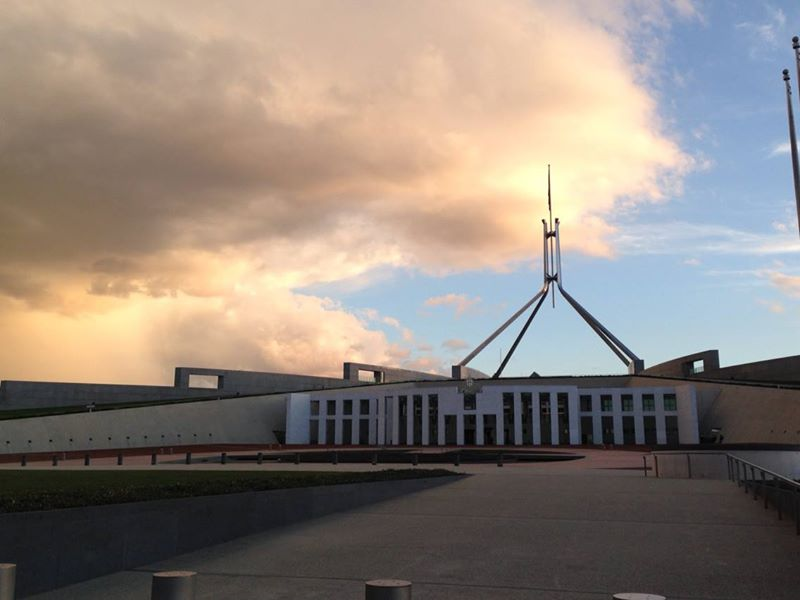

I believe that our political leaders are still underestimating the challenge posed by coronavirus. Radical action is needed to mitigate potential catastrophe. We must accept that the costs of coronavirus will be massive – a chunk of the economy will shut down. And that’s ok – we want high risk economic activities to shut down. All of us must make sacrifices to protect each other from grave danger.When confronted with a pandemic that may grow exponentially, infect up to 70% of the population and kill up to 5%-6% of recorded cases where health systems are overwhelmed – as we saw in Wuhan and are seeing in Italy – extreme risk mitigation is appropriate. While that death rate is likely to be substantially lower once all cases are counted (edited - see comments), in a worst case scenario it could nonetheless kill tens of millions worldwide, and over 200,000 in Australia. For comparison, Australia's War War II combat deaths totalled 27,000.
We are in a world war against coronavirus and we need a war economy. Large sacrifices are appropriate to avoid catastrophe. Significant restrictions on the private sector are required, along with an expansion of government planning to coordinate the economy to promote pro-social outcomes. Private markets are unable to satisfactorily deal with the extreme externalities associated with pandemics. In such crises, they can fail to allocate resources where they are most urgently needed.
In a context of catastrophic risk, we must suspend regular bean counter thinking. One does not pick up pennies in front of a steam roller.
Australia’s governments must act assertively and quickly. I recommend the following.
1. Urgent investment in intensive care
Deliver urgent and massive investment in intensive care beds and ventilators. These are the key variables in determining the death rate. Up to 6% of recorded cases are classified as “critical”, with patients requiring intubation to avoid death. Hospitals do not have nearly enough facilities to handle the sort of spike in cases that can come from a coronavirus outbreak. In Italy – where the recorded death rate is around 5% – doctors at the epicentre of the outbreak have to leave patients to die due to insufficient resources.
These recorded rates overstate the true rates and would fall if all infections were included (edited - see comments). The Imperial College corona response team estimates a hospitalisation rate of 4.4%, a critical rate of around 1.32% and a death rate of 0.9%. Assuming 65% of Australians become infected, based on a midrange estimate of herd immunity requirements, that would equate to 700,000 hospitalisations, 210,000 critical cases and 140,000 deaths. To the extent the hospital system is overrun, deaths could climb towards the first two numbers. Australia only has 2,023 intensive care unit beds. If the 210,000 critical care cases tend to be too closely concentrated in time and space (as they would in an uncontrolled outbreak), it's catastrophe. (It should be noted that some hospitalisations not recorded as critical can and do end in death.)
Australian Medical Association head Tony Bartone has said intensive care ventilator numbers "is going to be a significant issue."
"We'll never have enough to cope with a health emergency, a national health emergency, of the scale that potentially this could evolve to," he said.
In addition to hospital upgrades, Government should consider repurposing existing factories to support the effort against coronavirus.
2. Leave for casuals funded by government
Provide government-funded leave for any casual, self-employed or “gig economy” worker who is advised by a doctor to self-quarantine or enter isolation. The leave should also be available to workers particularly vulnerable to coronavirus who are not able to work from home. Payment rate to be an average of recent earnings or Newstart rate, whichever is higher. In addition, the payment should be available to permanent employees who exhaust their sick leave. A society that forces people to come into work and spread coronavirus in order to pay the rent is very confused.
3. Introduce rationing and grocery deliveries to the vulnerable
Ration essential groceries and fund deliveries to elderly, other at-risk groups and those in self-quarantine. Everyone needs staples. It is no surprise that people want to stockpile them. It reduces trips to the shopping centre, which is a coronavirus risk, and helps people prepare for a potential snap lockdown. As real interest rates approach zero, the cost of stockpiling becomes minuscule providing people have the storage space.
So the behaviour is not generally irrational (at the individual level) contrary to frequent claims by pundits. It does, however, create coordination problems for society.
Governments can solve this – and the solution does not involve asking nicely. Have we been so socialised into neo-liberalism we've forgotten the old fashioned power of government command?
4. Increase jobseeker payments, reduce waiting times, cut mutual obligation
People who lose their jobs will need urgent funds to help them meet financial obligations. We want to help them meet these obligations, and we do not want them so desperate that they engage in work or aggressive job search behaviours that are inappropriate due to coronavirus risk.
For the same reason, we should suspend various “mutual obligation” requirements. Job seekers should not, for example, be required to regularly visit their job search provider under pandemic risk. Currently these requirements apply even to those who are immunesuppressed - such as one woman who has undergone extensive chemotherapy. The obligations are mostly pointless anyway. Get rid of them.
5. Tell public servants to work from home
Direct agencies to ask all non-essential public servants to work from home. Australia has more than two million government workers. Even if only 15% of them could work from home, that’s over 300,000 people. This is significant in its own right, but more importantly it sends a signal to the private sector. Governments should lead by example.
Governments could also provide generous leave arrangements for staff who commit to staying home. For example, it could provide three weeks stay-home leave for each week deducted from a worker's annual leave balance.
6. Direct universities to implement intensive social distancing
Direct universities to move classes online and to require academics work from home. Those who need special technology available only at the university may be exempted. Tell the universities their compliance will influence future financial assistance.
7. Ask business to implement intensive social distancing
Make sure major businesses understand they are expected to carry their weight in promoting social distancing, including through work from home arrangements. If they display good behaviour voluntarily they may avoid a heavy-handed regulatory alternative.
8. Expand public employment to fight coronavirus
Fighting coronavirus is a national effort and there will be plenty of work to go around. Additional workers will be required for many tasks, from supporting health care to delivering groceries. High value medical and research staff in the coronavirus effort should have teams of assistants to maximise their productivity. Not a moment of their time should be wasted on tasks other people can do. We need to be prepared to cut corners in emergencies - China reportedly trained receptionists to do CT scans in Wuhan. A reserve army of workers needs to be trained and ready for an outbreak.
Workers who are in quarantine or isolated can be paid to promote coronavirus awareness online, including through their social networks. Workers can be hired as conventional public servants and through some variant of a job guarantee.
9. Consider incentive payments and wage subsidies to businesses that do the right thing
Consider wage subsidies for businesses that agree to meet certain social distancing standards. Violations of these standards would be investigated upon a complain from any party.
Incentives can be provided to businesses for every worker who works from home. When workers are not able to collaborate in person or utilise workplace capital, there will be a fall in productivity. The government should aim to remove or reduce this disincentive to employers. Subsidising employer sick leave expenses, particularly for businesses that experience a sick leave spike, may also be sensible.
10. Consider income contingent loans
Consider an income contingent loan program to help tie people over on their financial obligations. In this downturn - unlike the global financial crisis - household “stimulus” should be about helping people pay their existing bills, rather than encouraging a spending spree. The downturn is driven by supply rather than demand, so Keynesian pump priming is therefore inappropriate or even counterproductive. The health policy goal is for people to engage in fewer economic activities.
My hunch is that income contingent loans are less likely to be splurged than cash payments, so they may be more fit for purpose in dealing with coronavirus. People are debt averse, so they will be reluctant to take out a new loan unless they really need one. This instinct will assist in allocating cash to where it is most urgently needed. Income contingent loans may also be preferable to transfer payments for political economic reasons. Government debt is contentious. Compared to transfer payments, loans allow a much larger injection of cash for a given constraint on government net debt.
Concessional loans or, ideally, equity purchase could be considered as a way to help keep cash strapped businesses afloat.
11. Consider a small, emergency universal income
A universal income may seem to conflict with the targeting rationale of the income contingent loans, but the policy objectives are somewhat different. The loans are aimed at those who need urgent assistance with large financial obligations. But the downturn will be a slow burn strain on a much wider segment of the population. Many of us will find our casual, freelance or small business opportunities shrink; many will have their hours reduced. The fortnightly bills will become harder to pay. The emergency universal income would be designed to address this financial hardship which will be experienced by a large number of Australians.
Rather than trying to finely target assistance to such a large and disparate share of the population through clunky and gappy eligibility arrangements, it may be worth simply providing small fortnightly payments to all Australians. A small regular payment may be preferable to a single large cash payment given the objective is to help people pay their routine bills rather than to encourage a spending spree. Of course I’m making a psychological assumption here – about how people spend lump sums versus an income stream – and this is subject to empirical investigation.
The scheme would be universal income, but not universal basic income. The payment would be a supplement, not be enough to cover living costs on its own. Those who need a living allowance would register for a jobseeker payment or other conventional welfare program.
A time for the heavy hand of government
Competitive markets and individualism can deliver prosperity in normal times, but during major societal crisis the government needs to step in and take command of the economy to ensure resources are appropriately allocated to the collective effort.
It’s been so long since we’ve faced such as crisis everyone's forgotten what to do.
there is a whiff of doom saying about this post. The likely number of infected people is believed a manifold of what has been tested, so I'd be surprised if the death toll is above 1% and almost all the death are elderly with prior conditions, particularly cardiovascular and respiratory. So using the 7% number in your post is very likely misleading and tendentious. You should really not do that.
Humans have always been afflicted by diseases and life does go on, even risky life. So one does have to balance things and a total stop of social and economic life might do great harm. As it now seems likely this thing will go on for years (and no one expects a vaccine for another year), the current shutdown wont be sustainable. We will learn soon enough whether this thing can be contained or not with these draconian measures now in place, or whether it just comes back the moment one returns to "normal".
We might thus be on war footing for quite a while. The crucial consideration is then how to deal with frail old people for the whole period till there is a vaccine. What I think is going to have to happen, but hasnt been realised yet, is that their inevitable interaction with other people (at shops and in hospitals) should probably be in places exclusively manned by individuals who have already had the virus and have immunity to recurrence. So we need tests to tell us whether someone has had it and is now immune: such people are whom we need to look after old frail people.
In terms of how to pump money through the economy, the optimal thing would be to quickly set up a national bank with an account for everyone, and to put money in each persons' account. Thats the way to do universal income, but is immediately a way to register the population as well, particularly their corona status.
The banks will try to kill that idea of course, but this is the time for that idea.
I provided an upper bound of "up to" 5%-6% (not 7%), which is based on the data we have available, and clearly flagged it as an upper bound. Personally I think that's preferable to speculative numbers.
The death rate is not fixed. Embedded in the estimates that range from below 1% to 3% is proper health care treatment. It is not hard for a pandemic overwhelm health care systems - as we are seeing in Wuhan and Italy. That's the critical problem. And then death rates will surge. At that point, we should be looking at the rate of people who need hospitalisation (10%-20%) and in particular intensive care and a ventilator (6%). The latter are critical cases who would die without treatment. These cover all age groups. These are standard, accepted estimates.
I am concerned that your 1% is dangerously misleading, because it fails to consider health system constraints. In a context of systemic, catastrophic risk, I would always prefer to err on the side of precaution.
as the Cheng Wang article in the Lancet said, the initial estimate is invariably far higher than the later estimate because it is the grave cases that get measured.
The country where they arguably did the most random testing and hence picked up most of the actual cases is South Korea, which at present had 8,320 confirmed cases and 81 death. Of the currently 6,838 active cases, only 59 are "critical" and hence on the IC wards.
So South Korea had a morality rate of less than 0.1% And a "critical cases" rate of below 1% as well.
The suspicion must then be that in places like Italy the true number of infected individuals is a factor of several hundreds higher than measured.
Indeed, the death toll of this thing worldwide per day is still only 10% of the daily death toll from traffic. The whole outbreak has been the same as 2 days of traffic deaths and no one is suggesting we should ban all cars and all transport.
There is indeed a risk of overwhelming hospitals. They get overwhelmed by real cases and by panic.
There is a good chance that the total death toll caused by the panic will turn out to be an order of magnitude higher than that of the illness. Hospitals are overwhelmed by the panic, meaning they have postponed many operations and are not doing "normal health work". That is probably right now costing, many many lives.
The cost of the current panic is real. Too late now, I know. How about erring on the side of caution and not fan the flames of panic?
sorry, that should be "So South Korea had a morality rate of less than 1%. " though even that is likely an upper estimate. The less "heavy infected" regions in China had a death rate below 1%.
Thanks.
I've made a couple of edits to clarify the 5%-6% refers to recorded cases and this would overstate the rate in the whole population. I've then examined adjusted estimates and this has strengthed the post. It's still scary!
We are arguing over numbers but I think an underlying difference is in our priors about managing the situation.
I think when dealing with catastrophic societal risk it is appropriate and correct to anchor our thinking to worst case scenarios. For me, the extremes are the whole point when preparing for potential catastrophe. I also think insufficient concern is a much greater risk of endangering society than too much concern.
In the context of potential exponential growth, it pays to be hyper vigilant early - before you get to the point that hospitals are overwhelmed. This means acting in a way that feels disproportionate to the present situation. The growth is so rapid you must be a step ahead. That's how Singapore, Hong Kong and Taiwan have achieved their impressive containment.
They had experience of SARS, of course, and I'm sure this improved their systems. But I'd also bet the salience of that experience, the fear it engendered, made people more cautious.
In the context of a pandemic, I think fear is basically a good, adaptive emotion. It promotes appropriate precaution, such as social distincing.
Given pandemics are characterised by extreme externalities, the last thing we want to promote is optimising rational self interest. We absolutely do not want to tell young people not to worry because they themselves are unlikely to die. If they are a bit "too" scared relative to their personal risk, that's fantastic. It helps bring their conduct closer to the social optimum.
Not sure there's much evidence that panic is starting to kill people. The fundamental constraint is ventilators, and they're only hooked up to one of them if they're critical. People wanting to be tested is generally a good thing. Massive testing is how South Korea got things under control. Of course it is up to hospital to sensibly triage.
On the other hand, the consequence of recklessness can be extreme. After 30 cases, the South Korean outbreak came down to a single person - #31 - who ignored calls to get tested and proceeded to infect 1,300 people. These people in turn infected others, and so on. Whoops.
Compare to a traffic offender. A single case of bad behaviour - say speeding - and a driver might hurt themselves and a few others. And then that's it! No spiralling, exponentially growing catastrophe.
I don't think it makes much sense to compare present time period death numbers in something like traffic to those from systemic, multiplicative risk like pandemics. Comparing such different processes in this way would lead one to conclude that choking on M&Ms while juggling was a greater risk to humanity than asteroid strike.
It's always the next time periods that matter. We can expect global pandemic deaths to rise by orders of magnitude in the coming months, whereas that rate of growth would not happen in a million years for traffic deaths.
Hyper-precaution is our chance to slow the deadly growth of coronavirus. So I hope people are concerned and I hope this is salient as go about their day to day living.
Anyway, thanks for the opportunity to clarify and articulate my thinking on this.
https://www.scmp.com/week-asia/health-environment/article/3075164/south-koreas-
The South China Morning Post reports that:
“South Korea’s coronavirus response is the opposite of China and Italy – and it’s working
Seoul’s handling of the outbreak emphasises transparency and relies heavily on public cooperation in place of hardline measures such as lockdowns
While uncertainties remain, it is increasingly viewed by public health experts as a model to emulate for authorities desperate to keep Covid-19 in check.”
Sounds like we should be copying the Koreans .
On the health side, yep. A key part of the South Korean response was massive testing.
Also look to Taiwan, Hong Kong and Singapore whose aggressive measures meant it never got to a major breakout in the first place, despite extreme connectedness to China. Taiwan has had significantly fewer cases than Australia.
At the same time, we need to prepare for serious outbreaks, and that will involve a massive investment in ICU capability.
The first thing to remember is that Australia, like other Asian countries but apparently unlike Italy or the US has planned for a pandemic (I know, I once sat on a planning subcommittee). The current measures are not decisions being made in panic now but were planned a long time ago. They are based on simulation models built then, merely being updated with the relevant parameters as the particular characteristics of the pandemic agent becomes clear.
The problem with always assuming and acting on "worst case" scenarios is that the actions are extremely expensive - including, as Paul said, expensive in lives. It really is better to try and make decisions based on balance of risks calculated well in advance.
Thanks for starting a great conversation David,
A few comments as they occur to me – nothing very dramatic.
You justify government involvement because of externalities. I don't think that's right. Governments intervene in wartime not because there are externalities. If they want to buy ten tanks or commandeer supply chain to make ammo, there aren't too many externalities involved – at least until the enemy meets the tanks and ammo.
Much greater government command and control is justified mostly by the urgency and idiosyncratically not-to-be-repeated nature of the situation. Markets can only work well – for instance to supply food – if the situation is predictable and where profiteering is a rapidly passing and minor phenomenon on the way to supply and demand coming into some kind of alignment. Where that assumption is egregiously violated and it's having a sufficient impact to want to do something about it – governments should boss people about.
On your proposals for leave for casuals, I'd be more generous to include substantial increases in underemployment, and not just unemployment.
I think you're jumping the gun on rationing. We should be prepared to do it, but I haven't seen anywhere that would justify it. It's quite notable that people haven't really been able to inflict much damage with their panic buying. Most things will turn up within a few days. People can't KEEP buying toilet paper can they? Anyway, I'd certainly be prepared to do it if it's necessary, but it's hard to see critical shortages developing on a sustainable basis. There will be pull-forward purchases and I guess the great toilet paper chase suggests these things can acquire a momentum of their own. But I'd be surprised if on the second round – when new batches of pasta arrive if some commonsense local rationing and perhaps the threat of some shaming and tracking something stopping well short of what's beensuggested by John Quiggin wouldn’t moderate the tendency sufficiently for business-as-usual to resume soon. (obviously we need to keep people working at producing these goods).
You mention regulatory escalation for business. "If they display good behaviour voluntarily they may avoid a heavy-handed regulatory alternative". Can this be generalised, to other sectors?
"China reportedly trained receptionists to do CT scans in Wuhan". I'd love a reference.
"Incentives can be provided to businesses for every worker who works from home."
Maybe making them available for the change in behaviour would be more efficient. I also wonder how much one turns it into an accounting exercise. In the short term voluntary measures would be more likely to be focussed where they make a difference rather than gimmicks and accounting changes. But maybe I'm nitpicking.
I have much less faith that Scott Morrison right now is nothing more than a humble vessel of policies entirely determined by a mathematical model made by bureaucrats a few years ago.
But even if he was, determing pandemic response entirely by bureaucrat committee model developed years ago (with a few parameters plugged in) is not reassuring. It's one of the most disturbing public policies decision methodologies I've ever heard. What if the model is just wrong?
New research from Imperial College finds that mitigation initiatives milder than full blown lockdown will end in disaster.
Hi David,
glad you take this in the spirit it was intended.
Simply put though, I disagree with your idea of what "cautious" means. The systemic damage being done by the economic shutdown is a huge damage to health we have not been "cautious" about at all. Our populations, but particularly the health advisers, have been blind to this risk and have been totally gung ho about shutting down trade and business, with huge externalities on own employment and other countries.
Interestingly, the stock markets in China have tanked just as much as ours due to the meltdown here.
I suspect the economists at the ministries are working overtime to try and minimise the damage of all this "caution".
By the way, I worked in health policy in Treasury. I have come away pretty sceptical about decision making by committee and claims of policy being determined by "the experts". (I am aware of the pandemic committee.)
Where do they publish the models they use and the framework for the trade offs they make? You suggested in another comment that they were in fact making economic trade offs. Once you go down this line claims to pure objectivity go out the window. There must be some kind of weightings and normative judgements going on.
David Is anybody claiming "pure objectivity" ? ?
Ok, once it's processed through value judgements we can have no confident in "objectivity" at all. Any single argument in the decision function can totally change the output.
This could be solved with transparency. Just publish their models, explain their decisions and people can judge for themselves.